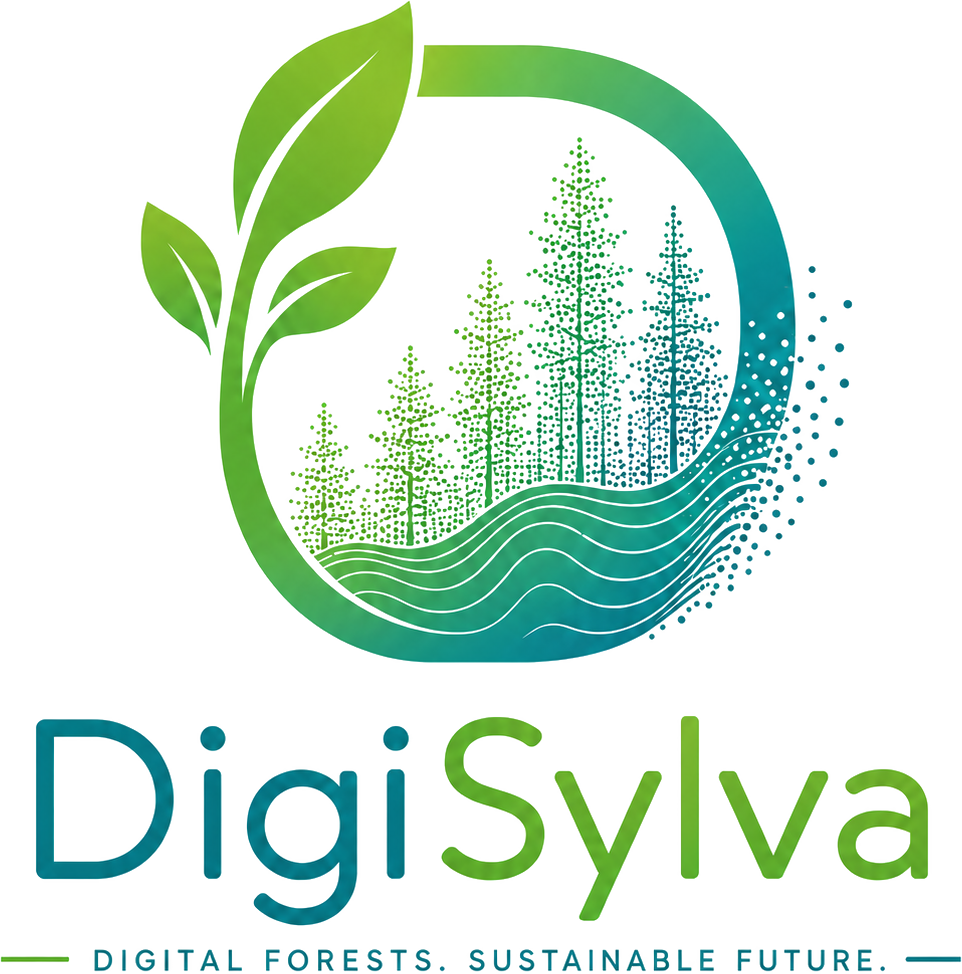

An integrated platform for forest digitalization, monitoring, mapping, and ecosystem sustainability across the United States.
From aerial imagery and field inventory to biomass mapping, prediction, health monitoring, and open tools, DigiSylva brings cutting-edge forest science to you.
Browse and download aerial imagery and LiDAR elevation, canopy height, and point clouds.
Explore field inventory plots with biomass, volume, structure metrics, and tree maps.
Interactive maps of aboveground biomass and canopy height with multi-year layers.
Project future biomass and canopy dynamics under climate and management scenarios.
Track insect and drought risk and outlooks across Maine's forests.
Open tools and software for forest carbon and inventory analysis.
Ask science-based questions about forest carbon, biomass, and management.
Peer-reviewed research and papers from the DigiSylva team.
Workshops, training, and events on forest science and carbon.
Latest updates, data releases, and announcements from the platform.
Meet the investigators, collaborators, and students behind DigiSylva.